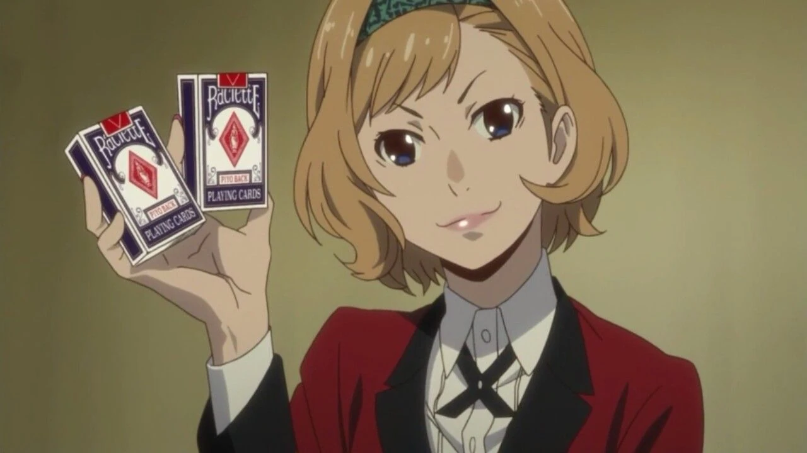
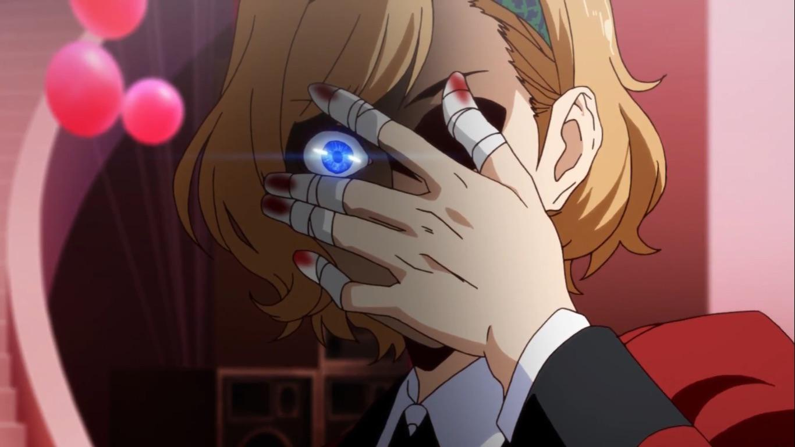

Itsuki Sumeragi é uma personagem secundária na franquia Kakegurui. É uma estudante do primeiro ano, membro da classe "Flower" e ex-integrante do Grêmio Estudantil na Academia Privada Hyakkaou. O seu pai é o presidente de uma importante empresa de brinquedos no Japão
Itsuki tem cabelo loiro na altura do queixo com franja puxada para a direita e chega às sobrancelhas com uma faixa verde no cabelo, olhos azuis e ela tem unhas pintadas de rosa com decorações em forma de estrela (suas unhas são decoradas com o terno de clubes no mangá), mas ela agora tem bandagens em volta dos dedos ensanguentados depois que ela arrancou as unhas durante a aposta contra Kaede Manyuda . Ela usa o uniforme emitido pela Hyakkaou Private Academy; um blazer vermelho com detalhes pretos nos punhos e gola decorada com botões dourados, por baixo ela usa uma camisa de botão branca com gravata preta e uma saia plissada com meias pretas que têm estrelas prateadas nas laterais junto com um par de mocassins marrons com sola preta.
Itsuki usa suas habilidades de jogo, bem como sua imensa riqueza, para conseguir tudo o que deseja, seja um assento no conselho estudantil ou até mesmo sua coleção de unhas humanas pintadas. Ela é manipuladora e experiente em negócios e usa seus próprios produtos em suas apostas para promovê-los. Quando ela a conhece, Itsuki age de forma muito amigável, mas logo revela seu lado distorcido e sádico. Ela não tem problemas em trapacear e arrancar dolorosamente as unhas dos outros. Ela é desonesta e pouco se importa com os outros e até parecia muito excitada com a ideia de arrancar as unhas das pessoas de quem gosta. No entanto, ela é bastante covarde e abandona essa fachada se ela mesma for atacada. Na verdade, ela é um tanto insegura e se sente inútil sem uma posição ou poder elevado.
Depois de ser expulsa do Conselho Estudantil, ela finge agir muito bem, mas na verdade só quer usar Yumeko para seus próprios objetivos. No entanto, através do tempo que passou com ela e especialmente da sua experiência durante o jogo Choice Poker , ela aprendeu a correr riscos reais e a ser mais corajosa. Como resultado, ela também se tornou uma pessoa mais gentil e fez amizade com Yumeko. Itsuki também tem sentimentos por Kaede, o que também a ajudou a aprender a se preocupar mais com os outros e a perceber que dinheiro e poder não são tudo na vida. Ele era uma das razões pelas quais ela estava tão desesperada para permanecer no conselho e manter sua atenção.
VOLTAR